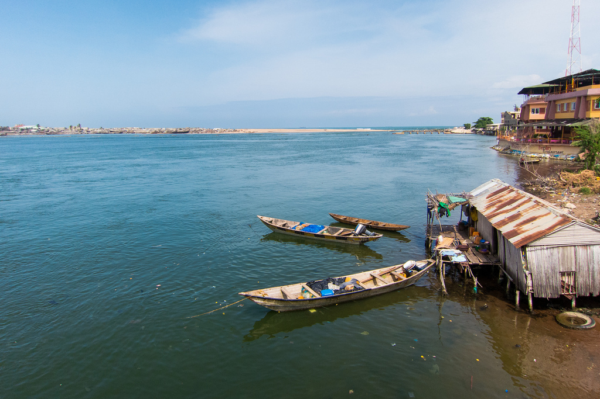

Cotonou is the biggest city in Benin as well as the largest economic center in the country. The population is estimated at around 1,200,000 inhabitants. The name Cotonou means “river of blood” in Fon. The city is a major trading port and government office hub despite Porto-Novo being the capital of Benin. This city has become a large trading hub because of the Ivorian Civil war. The city has also been stated as hosting 2/3 of Benin’s industries and is the headquarters of most of the banks and corporations in the country. Most of the trade of imported goods are items such as palm oil, textiles, cement and transportation vehicles. The main sights in the city are the National University of Benin and the Ancient Pont Bride
Cotonou